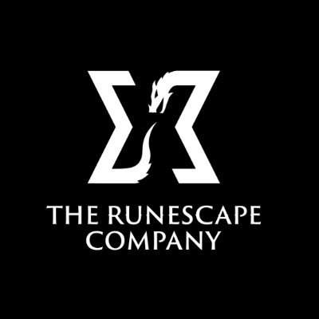

RuneScape: Dragonwilds
Genres: Open-World Action
Website
Developer: Jagex
Publisher: Jagex
Platforms: PC, PlayStation 5, Xbox Series X, Nintendo Switch 2
Released: 2026, September 15
Rated: Not Rated
On RuneScape's forgotten continent of Ashenfall, dragons have awoken. Gather, build, skill and craft in this co-operative survival adventure. Only by mastering survival and uncovering ancient secrets can you hope to face the ferocious Dragon Queen. RUNESCAPE AT ITS CORE! Embark on quests, level your skills and explore a beautiful hand-crafted world. This all-new adventure blends high-fantasy and iconic RuneScape lore on a brand new continent. RPG systems reward you with unique abilities and spells as you progress through each skill. Battle legendary RuneScape creatures like Zogres, challenge Black Knights and the entirely new and fearsome Garou, all set to a sweeping soundtrack of reorchestrated RuneScape classics and hours of brand new music. GRIND SKILLS, SLAY DRAGONS Locate them, throw down the gauntlet and carve your path to the Dragon Queen herself. Your progress will be under constant threat from the looming shadow of the Dragons, as you arm yourself and prepare to rise to face them. Follow the trail of destruction and uncover the mysteries of the continent to learn not just how to confront the dragons, but how to overcome them. Prepare potions, craft gear and push yourself to do battle with the most powerful force on the continent. The smart money's on the dragon. But we do love an underdog! SURVIVAL THROUGH SORCERY Summon a spectral axe to fell trees in an instant! Blink away from danger in a cloud of magic. Turn bones into... peaches? The Anima-rich landscape of Ashenfall offers you a power unlike any other. Conjure a tornado of fish from a lake! Explode ore veins with a snap of your fingers! Journey through the vibrant regions of Ashenfall, discover why wild magic spills from the fractured lands and harness that power to survive! COMMUNITY DRIVEN, PLAYER CENTRIC Like all RuneScape games, community is at the heart of everything we do. We've shaped our entire roadmap based on player feedback, leading us to launch dedicated servers earlier than planned, introduce new combat and new quest content. Working together we're continuing to develop RuneScape: Dragonwilds. Whether you're adventuring with friends or going it alone, every opinion matters, and it's up to you to help us shape the future of our game.